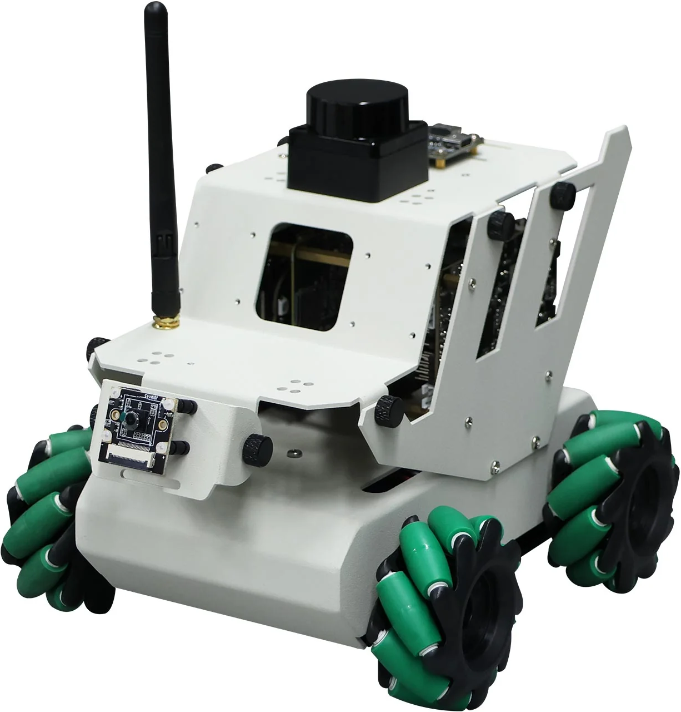

Mantis' Complete Change List
This page explains everything that I introduced or changed about Mantis, including hardware and software. The list will follow my development in chronological order. I didn't have a clear idea of what I wanted to do in the beginning, I just kept adding features that I found interesting, or modifying existing ones to improve them.
The Original Robot
I started my project from Yahboom's RDK X3 Robot (the version without the depth camera), which is already a fully functioning robot (you have to assemble it however) with a lot of capabilities.
Brief introduction
RDK X3 has 4 mecanum wheels, which give it the ability to move in any direction. For sensors,
it has a camera, a lidar, and other internal sensors that I still have not experimented with,
like IMU. It has a buzzer that can emit a beeping sound and a small oled screen that displays
information about the robot. It also comes with a handy, wireless PS2-like controller. The main
computer is a RDK X3 development board, which is similar to a Raspberry Pi.
The robot has already many sophisticated capabilities, such as SLAM (Simultaneous Localization
AndMapping), which allows it to map its environment and navigate autonomously. It can also
follow a line, avoid obstacles, and recognize objects. Most of them are implemented as ROS2
packages, which is a framework for building robotic applications.
The official documentation
linked above enters into the details about all the hardware and software, if you are interested.
Issues
- The smartphone apps provided by Yahboom didn't work in my case (the robot should be controllable by phone).
- I had trouble with the advanced capabilities, in part because my pc is Windows, so I had to use a virtual machine with Ubuntu to run ROS. But even then, sometimes they didn't work as expected.
- The robot could not strafe to the left or the right as it should (thanks to the mecanum wheels). Two of the wheels on a diagonal line were a bit elevated, almost not touching the ground. I didn't find the source of the problem, maybe it was how I attached the motors to the chassis, or the chassis itself was a bit bent. Thankfully, the bigger chassis that I switched to, didn't have this issue.
- The camera is frontal and without protections, be careful when driving the robot.
- The RDK X3 Robot arrived with a defective IMX2 camera. It worked (so it took me a lot of time to notice the problem), but the images were very blurry. The client support was very helpful and efficient: after a check, they agreed to send me a new camera free of charge. It also arrived quite fast, considering it was sent from Cina.
Oled screen
The oled screen is a small display that shows information about the robot, it has low resolution and a very limited number of characters can be displayed at once, but it is useful to show the status of the robot when you cant connect it to a computer or smartphone.

In the original version of the robot, the 4 lines of text available were used to show:
- CPU utilization percentage and current time
- Free RAM
- Disk memory usage
- IP address
I changed it to display:
- current mode and sub-mode e.g. "User Controlled (wheels)"
- Whether ROS is active or not | YOLO model name
- IP address | target name
- Battery percentage
Moreover, line 2 and 3 change to YOLO model and target name respectively, when the robot is in "Autonomous Mode (Vision)".
Vision Agent
This is a mode in which the robot act autonomously, it uses the camera to see the environment and a deep learning (YOLO) model to detect objects. The robot spin on itself and if it sees the target, moves towards it. hen it is close enough, it stops. It uses the lidar to know the distance from the target.